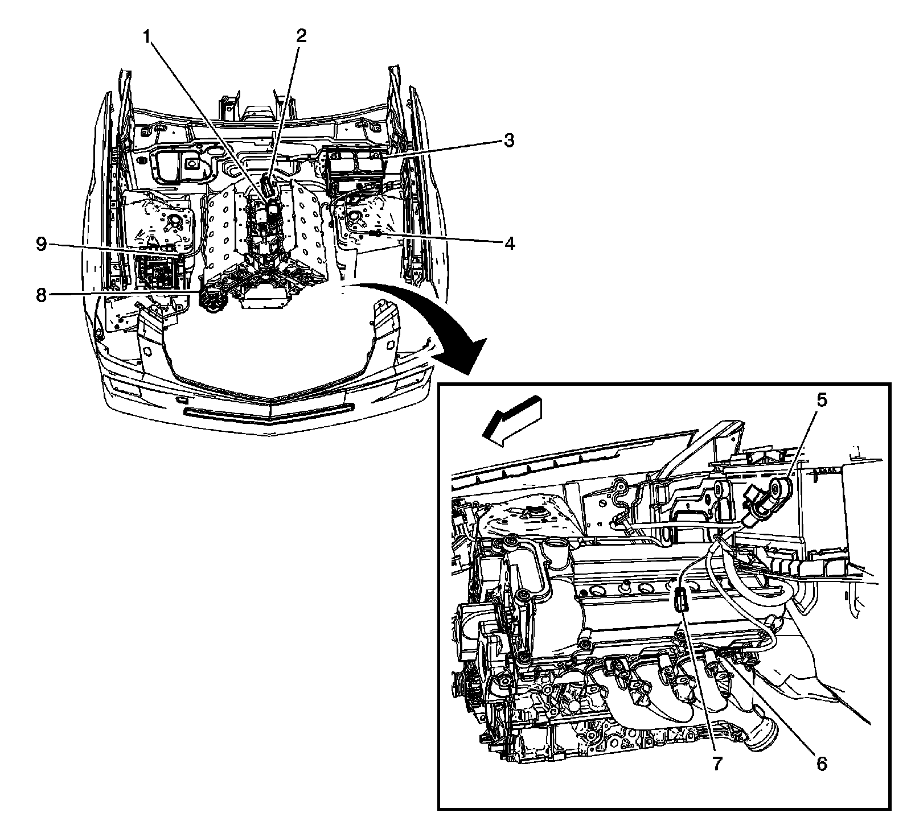
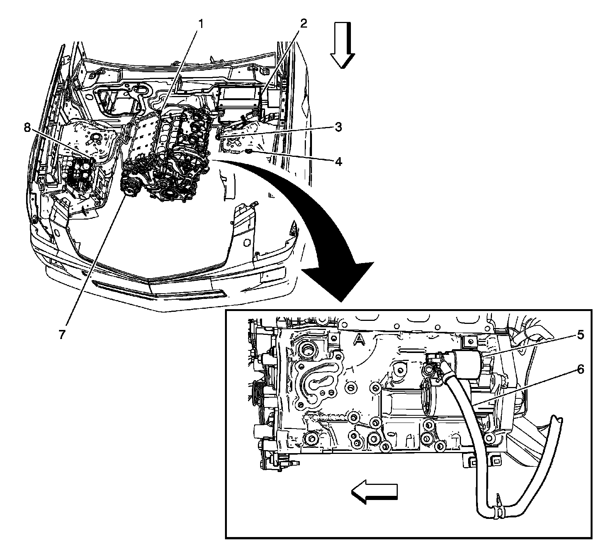

G102
Engine Electrical Components - LH2

1 - Starter
2 - X107
3 - Battery
4 - G105
5 - Battery Current Sensor
6 - G102
7 - X103
8 - Generator
9 - Fuse Block - Underhood Positive Voltage Studs
Engine Electrical Components - LY7

1 - G102
2 - Battery
3 - X103
4 - G105
5 - Starter
6 - Positive Battery Cable
7 - Generator
8 - Fuse Block - Underhood Positive Voltage Studs